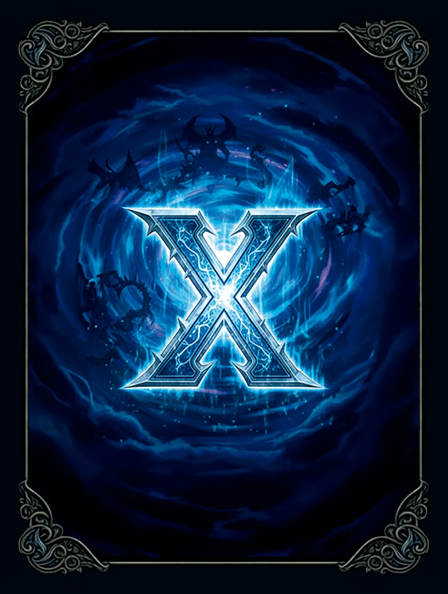
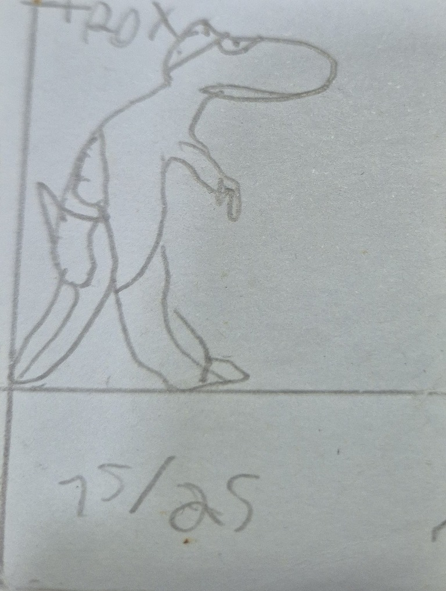
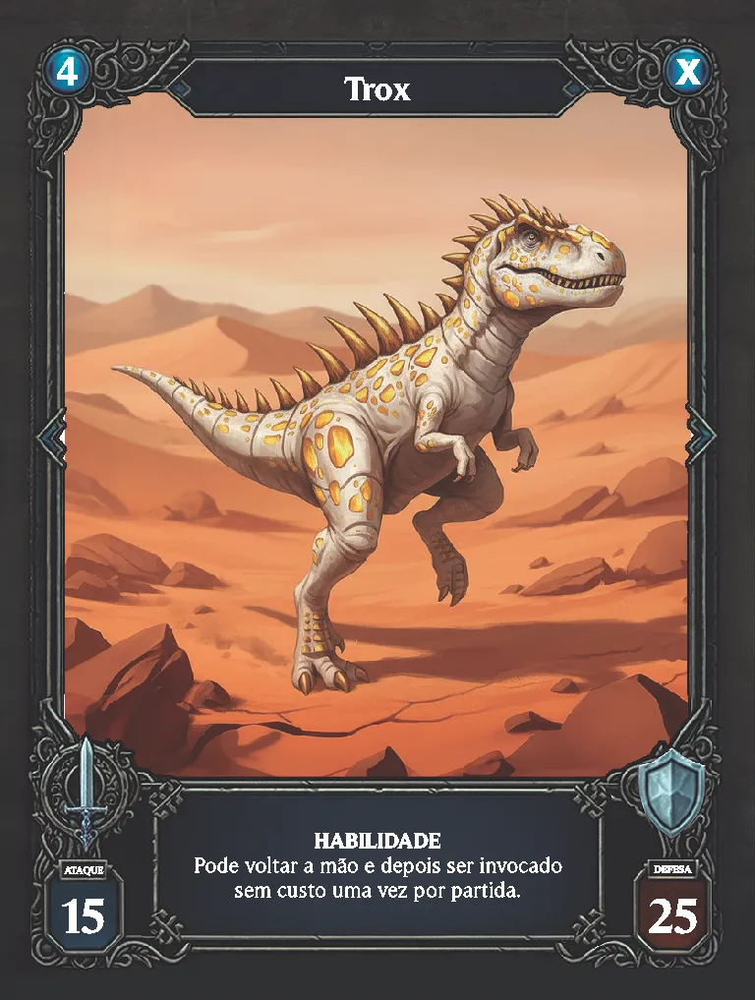

Um jogo de cartas original.
Monte sua estratégia, reúna seus monstros e descubra quem domina o campo. Jogue online, enfrente a CPU ou prepare um deck para sua próxima partida.

Explore o universo X Monsters
Cartas, deck, regras e placar
De onde veio o X Monsters
Da ideia em 2003 até o jogo digital
Tudo começou em 2003, aos nove anos de idade e fascinado pelo universo dos jogos de cartas: as primeiras criaturas do X Monsters nasceram desenhadas a lápis no verso de cartas velhas e folhas de caderno — o nome da criatura no topo e os números de ataque e defesa na base.
O projeto evoluiu rapidamente de rascunhos para um sistema completo. Cada monstro ganhou sua própria lore e pertencimento no mundo do jogo. Em seguida nascia a mecânica de custos, trazendo cartas de suporte, regras de evolução e custos de energia que transformaram o passatempo em uma batalha tática profunda.
Anos mais tarde veio o grande ponto de virada com a ajuda da IA, que organizou as ideias dispersas, afinou as regras e destravou o desenvolvimento visual e estratégico. Na sequência, a parceria com um amigo designer reimaginou as ilustrações do caderno em cartas físicas completas: molduras temáticas, tipografia nítida e leitura limpa na mesa.
Hoje, o X Monsters ganha vida no ambiente digital: um jogo completo com deck builder, partidas contra a CPU e PvP online em tempo real no navegador — preservando a alma e a essência daqueles monstros criados em 2003.


- 2003O Primeiro TraçoNove anos, Yu-Gi-Oh! na cabeça e os primeiros monstros desenhados no verso do papel.
- LoreMundo & HistóriasCada monstro ganha nome, tipo, elemento e lugar no universo do jogo.
- MecânicaMecânica de CustosCusto de energia, evoluções de criaturas e cartas de suporte com habilidades.
- A ViradaAjuda da IAA inteligência artificial organizando ideias dispersas e destravando o desenvolvimento visual e tático.
- A MesaCartas FísicasEm parceria com um designer, as cartas ganham molduras profissionais e arte final.
- HojeX Monsters OnlineDeck builder, batalhas contra CPU e PvP online em tempo real no navegador.